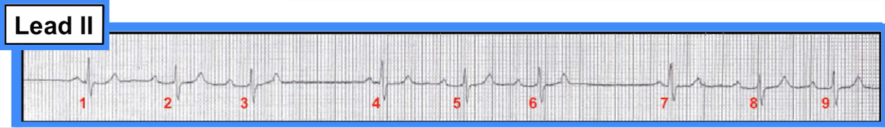
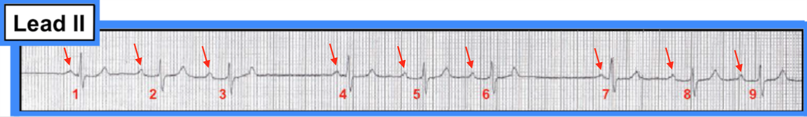
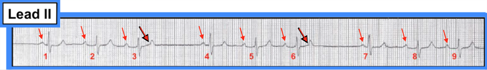
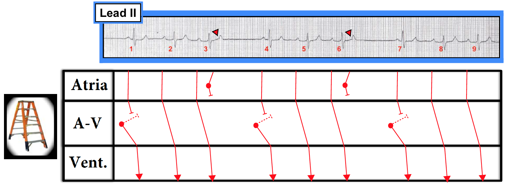

ECG Blog #147 (Blốc AV - PAC - Mobitz I, II).
Dải nhịp chuyển đạo II dài trong Hình 1 được chẩn đoán là blốc AV độ 2, Mobitz loại II.
- Bạn có đồng ý với nhận định đó không? Nếu không — Chẩn đoán của bạn là gì?
-----------------------
LƯU Ý: Đây là một rối loạn nhịp khó đọc. Dù vậy, trong suốt phần bàn luận chúng tôi đưa ra nhiều điểm then chốt (pearl) về đọc rối loạn nhịp, hữu ích cho người đọc điện tâm đồ ở bất kỳ trình độ nào. Bạn có sẵn sàng nhận thử thách không?
-----------------------


Các điểm lâm sàng MẤU CHỐT: Cách tiếp cận hệ thống của chúng tôi để đọc bất kỳ nhịp tim nào là “Để ý P, Q và 3 chữ R”. Nghĩa là, đánh giá có hệ thống từng bản ghi bạn gặp theo 5 thông số then chốt sau:
- i) Có sóng P không? — hoặc, nếu không thấy sóng P rõ, thì có dấu hiệu hoạt động nhĩ (như “sóng rung” hoặc cuồng nhĩ) không?
- ii) Phức bộ QRS có rộng không? — chúng tôi coi bất kỳ thời gian QRS nào dài hơn nửa ô lớn (tức là >0.10 giây) là QRS “rộng”.
Và 3 chữ R:
- iii) Tần số (Rate)? — Tần số thất (và tần số nhĩ) là bao nhiêu?
- iv) Tính đều (Regularity)? — Nhịp thất (và nhịp nhĩ) có đều không?
- v) “Liên quan” (“Related”)? — Có mối liên hệ đặc hiệu giữa các phức bộ QRS và hoạt động nhĩ lân cận không?
LƯU Ý: Không quan trọng bạn đánh giá P, Q và 3 R theo thứ tự nào — miễn là bạn luôn đánh giá đủ cả 5 thông số then chốt này. Chúng tôi thường thay đổi thứ tự xem xét P, Q và 3 R — tuỳ theo hoạt động nhĩ, độ rộng QRS và/hoặc tính đều của nhịp dễ hay khó đánh giá hơn trong nhịp cụ thể mà chúng ta đang xem.
- ĐIỂM THEN CHỐT (PEARL): Bằng cách luôn nhớ “Để ý P, Q và 3 chữ R” — bạn luôn có sẵn một phương pháp dễ nhớ để bảo đảm rằng cách tiếp cận của bạn luôn có hệ thống (đồng thời tiết kiệm thời gian) và rằng bạn không bao giờ quên đánh giá từng yếu tố trong 5 yếu tố thiết yếu này. Bằng cách áp dụng đều đặn “Cách tiếp cận P, Q và 3 R” cho mọi rối loạn nhịp bạn gặp — ngay cả khi nguyên nhân cụ thể của nhịp vẫn còn chưa rõ — bạn sẽ thu hẹp các khả năng chẩn đoán, và làm rõ những phần cụ thể nào của nhịp mà bạn vẫn còn chưa chắc chắn.
Gợi ý Bổ sung: Để việc đọc các nhịp phức tạp hơn được dễ dàng — chúng tôi đưa ra các gợi ý bổ sung sau:
- Bắt đầu từ những gì bạn biết! Nếu bản ghi có những phần dễ đọc hơn (bên cạnh những phần phức tạp hơn) — Hãy bắt đầu với những phần dễ hơn! Có nhịp nền không? Nếu trên bản ghi có một số nhát dẫn truyền từ xoang — thường dễ nhất là xác định các nhát xoang này trước, và để dành những phần khó hơn của rối loạn nhịp để đọc sau.
- Hãy dùng compa đo (calipers)! Bạn sẽ ngạc nhiên vì mình trở nên “thông minh” hơn ngay lập tức đến mức nào kể từ lúc bạn bắt đầu thường xuyên dùng compa đo để đọc các rối loạn nhịp khó. Đồng nghiệp sẽ thán phục khi thấy bạn tập trung hơn hẳn nhờ thường xuyên áp dụng biện pháp đơn giản này. Ngay cả chuyên gia cũng đọc tốt hơn khi dùng compa đo! Hãy nhớ: Bác sĩ tim mạch nào không dùng compa đo để đọc các rối loạn nhịp phức tạp — là bác sĩ tim mạch sẽ không phải lúc nào cũng đưa ra được kết quả đọc đúng.
- Việc đánh dấu sóng P trên bản ghi thường rất hữu ích! Nếu bạn đang giảng dạy và/hoặc đang bàn luận một bản ghi với đồng nghiệp — việc đánh số các nhát cũng thường rất hữu ích, vì đây là cách tiết kiệm thời gian nhất để bảo đảm mọi người tham gia thảo luận ngay lập tức biết phần cụ thể nào của bản ghi đang được đề cập. (Lưu ý: Tốt nhất là không đánh dấu lên bản ghi gốc — vì vậy hãy cố gắng dùng một bản sao trước khi đánh dấu.)
Ghi nhớ các điểm này, bây giờ chúng ta tiến hành đọc có hệ thống nhịp trong Hình 2:


Diễn giải: Giả sử bệnh nhân ổn định về huyết động. Chúng ta bắt đầu diễn giải bằng việc đánh giá “P, Q và 3 R”. Lưu ý những điểm sau:
- Phức bộ QRS trong Hình 2 hẹp. Mặc dù lý tưởng là nên có đủ các chuyển đạo của điện tâm đồ 12 chuyển đạo trước khi khẳng định về thời gian QRS — các phức bộ QRS trong bản ghi này rõ ràng trông hẹp và có nguồn gốc trên thất.
- Nhịp thất không hoàn toàn đều. Dù vậy, nhịp này có một quy luật — ở chỗ có “nhịp theo nhóm (group beating)”, với 3 nhóm mỗi nhóm gồm 3 nhát lặp lại theo một khuôn mẫu.
- Thấy rõ sóng P xoang (mũi tên ĐỎ) — nhận ra nhờ có các sóng P dương có hình dạng giống nhau trên dải nhịp chuyển đạo II dài này. Các khoảng P-P có vẻ hằng định, ngoại trừ 2 khoảng ngưng ngắn xảy ra ở cuối mỗi nhóm (tức là sau nhát #3 và sau nhát #6).
- Tần số của nhịp thay đổi — nhưng không quá nhanh, cũng không quá chậm.
- Có vẻ như có một liên hệ nhất quán giữa một số sóng P xoang và các phức bộ QRS lân cận. Nghĩa là, khoảng PR đứng trước các nhát #2,3; #5,6; và #8,9 có vẻ hằng định (dù hơi kéo dài).
Bước tiếp theo: Giờ chúng ta đã xem xét từng thông số trong 5 thông số then chốt — Hãy xem có thể rút ra kết luận gì:
- Mặc dù nhịp này phức tạp — có vẻ như có một nhịp xoang nền — vì một sóng P dương với khoảng PR cố định đứng trước không ít hơn 6 trong 9 nhát trên bản ghi này (tức là các nhát #2,3; #5,6; và #8,9).
- Một khoảng PR ngắn hơn nhiều, nhưng vẫn hằng định, đứng trước nhát thứ 1 của mỗi nhóm trong 3 nhóm. Chúng ta cần giải thích TẠI SAO lại như vậy. Chúng ta cũng cần giải thích tại sao tần số sóng P xoang không hằng định trong suốt bản ghi này — và tại sao các khoảng ngưng ngắn xen vào mỗi nhóm.
-----------------------------------------------------------
Các khả năng chẩn đoán: Hai bệnh cảnh lâm sàng cần được nghĩ tới như những lời giải thích khả dĩ cho các dấu hiệu điện tâm đồ mô tả ở trên. Đó là: i) một dạng blốc AV nào đó; và ii) PAC bị blốc (không dẫn truyền). Hãy lần lượt xem xét từng khả năng.
- KHÔNG có blốc AV độ 2 hay độ 3 trong Hình 2. Mặc dù khoảng PR có vẻ tăng lên giữa nhát thứ 1 và thứ 2 của mỗi nhóm — nhịp trong Hình 2 không phải là Wenckebach AV. Đó là vì tiền đề của Wenckebach AV (còn gọi là blốc AV độ 2 dạng Mobitz I) — là phải có một nhịp xoang đều nền trong suốt bản ghi. Với Wenckebach AV, khoảng PR tăng dần, cho đến khi một hoặc nhiều sóng P xoang xuất hiện đều đặn không được dẫn truyền. Tuy nhiên, các mũi tên ĐỎ trong Hình 2 cho thấy sóng P xoang đều không kéo dài suốt bản ghi này. Vì những lý do tương tự, nhịp này không phải là blốc AV độ 2 dạng Mobitz II. Thứ nhất, khoảng PR không hằng định (như lẽ ra phải thế nếu có Mobitz II) — và thứ hai, khoảng P-P của sóng P xoang không hằng định trong suốt dải nhịp như hầu như luôn thấy ở gần như mọi dạng blốc AV. Cuối cùng, nhịp này không thể là blốc AV hoàn toàn (tức là độ 3) — vì có dẫn truyền của một số nhát xoang (tức là các nhát #2,3; #5,6 và #8,9 đều được dẫn truyền với khoảng PR hằng định).
ĐIỂM THEN CHỐT (PEARL): Nguyên nhân thường gặp nhất của một khoảng ngưng là PAC bị blốc! Hiện tượng này xảy ra thường xuyên hơn nhiều so với người ta thường nghĩ. PAC bị blốc là nguyên nhân gây khoảng ngưng thường gặp hơn nhiều so với bất kỳ dạng blốc AV nào. Thách thức về chẩn đoán là PAC bị blốc có thể cực kỳ kín đáo và dễ bị bỏ sót. Bí quyết là tìm PAC bị blốc mỗi khi bạn gặp bất kỳ khoảng ngưng bất ngờ nào.
- Cách tìm: Xem xét kỹ đoạn ST và sóng T ở khởi đầu khoảng ngưng. So sánh đoạn ST và sóng T ở khởi đầu khoảng ngưng này (tức là sóng ST-T của các nhát #3 và #6 trong Hình 2) — với sóng ST-T của mọi nhát xoang dẫn truyền bình thường trên bản ghi. Có khác biệt nào không?
- LƯU Ý: Chúng tôi hoàn toàn thừa nhận rằng phát hiện PAC bị blốc có thể khó. Người đọc phải phân biệt giữa những biến thiên nhỏ xảy ra tự nhiên giữa các nhát ở sóng ST-T — với những khía hoặc chỗ lệch do một sóng P đến sớm vùi trong (và vì vậy làm biến dạng) sóng ST-T.
- Để luyện tập: Chúng tôi minh hoạ cách phát hiện PAC bị blốc trong ECG Blog #33 và Blog #57. Một khi bạn bắt đầu thường quy tìm PAC bị blốc mỗi khi thấy một khoảng ngưng bất ngờ — tôi bảo đảm rằng bạn sẽ tìm thấy chúng với tần suất đáng ngạc nhiên!
Hãy tự kiểm tra bằng cách tìm dấu hiệu PAC bị blốc trong Hình 2. Nhìn kỹ vào chân sóng T ở khởi đầu mỗi khoảng ngưng — đặc biệt chú ý tới sóng T sau nhát #6.
- Nhớ phóng to bản ghi bằng cách bấm vào để xem trong một cửa sổ riêng!
- Chúng tôi minh hoạ câu trả lời bên dưới trong Hình 3.


Trả lời: Lưu ý chỗ gập góc kín đáo ở chân sóng T của các nhát #3 và #6 tại khởi đầu mỗi khoảng ngưng (mũi tên ĐỎ-ĐEN trong Hình 3). Biến dạng kín đáo này không có ở sóng T của mọi nhát khác trên bản ghi này.
- Chúng tôi rất nghi ngờ rằng góc gập ở chân các sóng T này là do PAC bị blốc (blocked PACs). Các PAC bị blốc này sau đó tái lập (reset) nút xoang — và điều này giải thích khoảng ngưng ngắn theo sau nhát #3 và #6.
Câu Hỏi cuối cùng: Tại sao khoảng PR ở cuối mỗi khoảng ngưng lại ngắn hơn khoảng PR của các nhát xoang dẫn truyền bình thường?
-----------------------------------------------------------
Trả lời: Lý do các nhát #1, 4 và 7 đều có khoảng PR ngắn hơn các nhát #2,3; #5,6; và #8,9 — là vì các nhát #1, 4 và 7 là những nhát thoát bộ nối xuất hiện trước khi các sóng P xoang đi trước chúng kịp dẫn truyền! Từ khoảng PR có độ dài không đổi đi trước các nhát #2,3; 5,6 và #8,9 — ta có thể thấy rằng dẫn truyền xoang trên bản ghi này cần hơn 0.20 giây một chút.
- Trong Hình 3 — ổ thoát bộ nối phát xung trước khi các sóng P đi trước nhát #1, 4 và 7 có đủ thời gian để dẫn truyền.
Vượt ra ngoài phần cốt lõi:
Hai dấu hiệu ủng hộ giả thuyết của chúng tôi rằng các nhát #1, 4 và 7 không phải là nhát dẫn truyền từ xoang, mà là các nhát thoát bộ nối:
- Dấu hiệu #1: Khoảng R-R đi trước 2 nhát bộ nối là như nhau! (tức là, khoảng R-R giữa nhát #3-4 và giữa nhát #6-7 là giống hệt nhau). Lý do 2 khoảng R-R này bằng nhau là vì thời khoảng R-R này tương ứng với tần số thoát bộ nối.
- Dấu hiệu #2: Hình dạng QRS của 3 nhát bộ nối trên bản ghi này (tức là nhát #1,4,7) hơi khác so với hình dạng QRS của các nhát dẫn truyền từ xoang. Cụ thể, sóng R của các nhát #1,4 và 7 hơi cao hơn — và sóng S hơi nhỏ hơn — so với sóng R và S của từng nhát dẫn truyền từ xoang. Dù khác biệt này cực kỳ nhỏ — nó có vẻ là có thật, và cung cấp một manh mối vô giá rằng các nhát #1, 4 và 7 quả thực là nhát thoát bộ nối (và rằng các sóng P đi trước nhát #1, 4 và 7 không được dẫn truyền). Điều này càng ủng hộ tiền đề của chúng tôi rằng nhịp này không phải là Wenckebach AV.
----------------
ĐIỂM THEN CHỐT (PEARL): Đôi khi (không phải luôn luôn) hình dạng QRS của các nhát từ nút AV sẽ trông khác đi một cách nhỏ nào đó so với hình dạng QRS của các nhát dẫn truyền từ xoang. Đó là vì ta không bao giờ biết nhát nút xuất phát từ đâu bên trong bộ nối AV (tức là, nhát bộ nối có thể xuất phát từ bờ này hay bờ kia của nút AV) — khi đó “đường đi” của nhát bộ nối trên thất này có thể chỉ hơi khác một chút so với đường đi của nhát dẫn truyền xoang bình thường. Nhận ra khác biệt nhỏ nhưng nhất quán này về hình dạng QRS khi nó xuất hiện đôi khi có thể cung cấp một manh mối vô giá để biết nhát nào trên dải nhịp là dẫn truyền từ xoang so với nhát nào xuất phát từ nút AV.
BÌNH LUẬN: Chúng tôi hoàn toàn thừa nhận rằng cần theo dõi thêm bệnh nhân này để chứng minh dứt khoát giả thuyết của chúng tôi về cơ chế của rối loạn nhịp thú vị này. Và đúng là đôi khi không thể đưa ra một diễn giải dứt khoát duy nhất cho một rối loạn nhịp phức tạp chỉ từ điện tâm đồ bề mặt. Dù vậy — chúng tôi cho rằng phần bàn luận ở trên rõ ràng đưa ra một lời giải thích hợp lý cho tất cả các dấu hiệu ghi nhận trên bản ghi này.
- Để làm rõ — Hình 4 trình bày một giản đồ bậc thang (laddergram) minh họa giả thuyết của chúng tôi.


Ý nghĩa Lâm sàng: Không có blốc AV độ 2 hay độ 3 trên bản ghi này. Ý nghĩa lâm sàng đối với bệnh nhân này cũng giống như với bất kỳ ai có PAC và khoảng PR hơi kéo dài. Điều này thường bao gồm việc tìm nguyên nhân gây PAC, kèm các biện pháp khắc phục (tức là, hạn chế caffeine; điều trị suy tim hoặc rối loạn điện giải, v.v.) nếu/khi có chỉ định lâm sàng. Khi không có các dạng bệnh tim khác — blốc AV độ 1 đơn độc thường có ý nghĩa lâm sàng rất ít. Các khoảng ngưng ngắn được kết thúc bởi nhát thoát bộ nối thể hiện một đáp ứng hoàn toàn phù hợp với các PAC bị blốc đã tái lập ổ tạo nhịp nút xoang. Tóm lại — đây nhiều khả năng là một rối loạn nhịp khá lành tính.
- LƯU Ý: Mặc dù cơ chế chính xác mà chúng tôi đưa ra cho nhịp này là ở mức nâng cao — các nguyên tắc cơ bản được bàn trong bài blog này nằm trong tầm nắm bắt của bất kỳ người làm lâm sàng nào. Việc sử dụng Nguyên tắc Ps, Qs & 3R (Principle) sẽ giúp tổ chức cách tiếp cận của bạn và thu hẹp chẩn đoán phân biệt vào các thực thể mà chúng tôi đã xem xét. Blốc AV độ 2 Mobitz I và Mobitz II có thể dễ dàng loại trừ — vì tần số nhĩ không đều. Blốc AV hoàn toàn bị loại trừ vì rõ ràng có dẫn truyền của một số nhát. Nắm được chân lý lâm sàng rằng “nguyên nhân thường gặp nhất của một khoảng ngưng là PAC bị blốc” khi đó sẽ dẫn bạn đến chẩn đoán đúng!
-----------------------------------------------------------
LỜI CẢM ƠN: Xin cảm ơn Robert Drutel đã cho phép tôi sử dụng bản ghi và ca lâm sàng này.
-----------------------------------------------------------
Tài liệu bổ sung: Để ôn lại Kiến thức cơ bản về Blốc AV — Xem ECG Video dài 58 phút của tôi về chủ đề này tại www.avblockecg.com —
- Xin lưu ý rằng nếu bạn bấm vào SHOW MORE trên trang You-Tube bên dưới chỗ video này xuất hiện — bạn sẽ thấy phần Mục lục có liên kết chi tiết, cho phép bạn tìm ngay bất kỳ điểm chính nào bạn đang tìm trong video này.
--------------------------
LƯU Ý: Để có bài hướng dẫn nhập môn về Cách Vẽ một Giản đồ bậc thang (laddergram) — Xem ECG Blog #69 của tôi —
--------------------------
Để tìm hiểu thêm về cách nhận biết PAC bị blốc — Mời xem ECG Blog #33 và Blog #57 của tôi. Khi thực hành — bạn sẽ bắt đầu phát hiện PAC bị blốc với tần suất đáng ngạc nhiên!